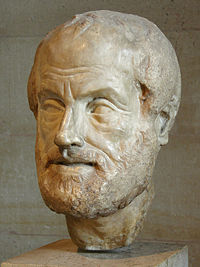
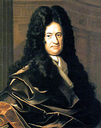
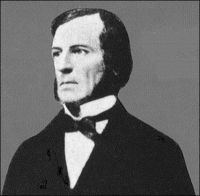
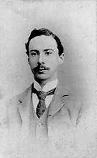
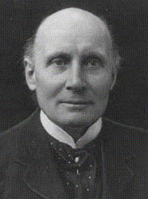
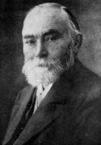

| Choisissez votre langue ! | Choose your language ! |
Logique
Index des pages
La logique, liée à la notion de 'vérité', a toujours eu une composante philosophique et une composante scientifique.
Du point de vue scientifique, la logique est le langage des mathématiques, l'ensemble des règles qui codifient le discours mathématique. En ce sens il s'agit du fondement des mathématiques.
Mais la logique est aussi une branche des mathématiques à part entière, une spécialité avec ses techniques et son langage propre. En tant que telle (spécialité des mathématiques), il s'agit d'une branche récente, très abstraite et peu facile d'accès. Ajoutons à cela que le développement récent de l'informatique a contribué au développement de la logique 'formelle' qu'il s'agisse de construire des circuits imprimés ou bien de développer le 'raisonnement' artificiel, les démonstrations dites 'automatiques'.
Donc d'un côté, il faudrait commencer l'enseignement des mathématiques par un cours de logique. De l'autre, les exigences de la pédagogie, imposent d'aller du simple au complexe.
Il faut donc trouver un compromis acceptable.
Ce compromis doit en particulier, établir le lien entre le raisonnement 'usuel' dans une langue 'naturelle' (français, anglais, ou autre) et le raisonnement 'formalisé' exprimé au moyen d'une écriture symbolique pouvant en théorie être lue et écrite par un ordinateur.
Bien que les démonstrations de certains théorèmes n'existent aujourd'hui que sous la forme de programmes d'ordinateurs, la plupart des raisonnements sont toujours faits par des humains pensant et écrivant dans leur langue maternelle. Les ordinateurs se voient confier des tâches subalternes de vérifications et d'études de cas exhaustives qui seraient trop longues à traiter manuellement.
L'activité mathématique consiste à établir des relations 'vraies' appelées des 'théorèmes'. Encore que cette production ne doit pas être anarchique. Les assertions vraies existent en nombre infini, les programmes capables de les produire ne sont pas difficiles à écrire. Mais la science en général, et la science mathématique en particulier focalise toute son attention sur l'établissement de certaines relations qui résolvent des problèmes 'réels' qu'ils soient théoriques (Théorème de Fermat) ou techniques. Pour le moment seul l'humain a une vision d'ensemble assez large pour déterminer quelles sont les productions 'utiles'.
On peut penser que, quelques soient les projets de l'intelligence artificielle, il en sera encore ainsi pour longtemps, ce qui ne dispense évidemment pas de formaliser des raisonnements, ne serait-ce que pour s'assurer de leur validité en regard des 'règles du jeu' établies par la logique formelle.
Ainsi une introduction aux mathématiques doit évidemment comporter une introduction à la logique. Cette introduction à la logique, ne peut en aucun cas être un cours de logique formelle. Elle ne peut pas se résumer non plus à un exposé succinct de la théorie des langages qui connaît un succès grandissant et justifié en informatique. On ne peut non plus resservir à une sauce moderne les vieilles recettes d'Aristote, de Platon et tous nos vénérables Anciens qui ont le mérite d'avoir été les pères fondateurs de la science.
Il faudra donc essayer de rester simple, proche du langage naturel, et cependant de donner un avant-goût de ce qu'est la logique formelle, de ses buts et de ses méthodes. Vaste programme ...
Rester simple sans dire de contre-vérité est un des principaux écueils à éviter.
Voici maintenant quelques grandes figures de la logique classique et moderne:
Logic
Index of pages
Logic, linked to the notion of 'truth', has always had a philosophical component and a scientific component.
From a scientific point of view, logic is the language of mathematics, the set of rules that codify mathematical discourse. In this sense it is the foundation of mathematics.
But logic is also a branch of mathematics in its own right, a specialty with its own techniques and language. As such (mathematics specialty), it is a recent branch, very abstract and difficult to access. Let us add to this that the recent development of computing has contributed to the development of 'formal' logic, whether it is a matter of building printed circuits or developing artificial 'reasoning', so-called 'automatic' demonstrations.
So on the one hand, the teaching of mathematics should begin with a course in logic. On the other hand, the requirements of pedagogy require going from the simple to the complex.
An acceptable compromise must therefore be found.
This compromise must, in particular, establish the link between the 'usual' reasoning in a 'natural' language (French, English, or other) and the 'formalized' reasoning expressed by means of a symbolic writing which can in theory be read and written. by a computer.
Although proofs of certain theorems exist today only in the form of computer programs, most reasoning is still done by humans thinking and writing in their native language. Computers are given menial tasks of verifications and exhaustive case studies that would take too long to process manually.
Mathematical activity consists of establishing 'true' relations called 'theorems'. Although this production should not be anarchic. True assertions exist in infinite numbers, programs capable of producing them are not difficult to write. But science in general, and mathematical science in particular, focuses all its attention on establishing certain relationships that solve 'real' problems, whether theoretical (Fermat's theorem) or technical. For the moment, only humans have a broad enough overview to determine which productions are 'useful'.
One can think that, whatever the projects of artificial intelligence, it will still be so for a long time, which obviously does not dispense with formalizing reasoning, if only to ensure their validity with regard to ' rules of the game' established by formal logic.
Thus an introduction to mathematics must obviously include an introduction to logic. This introduction to logic can in no way be a course in formal logic. Nor can it be reduced to a succinct presentation of the theory of languages which is enjoying growing and justified success in computer science. Nor can we reserve in a modern sauce the old recipes of Aristotle, Plato and all our venerable Ancients who have the merit of having been the founding fathers of science.
It will therefore be necessary to try to remain simple, close to natural language, and yet to give a foretaste of what formal logic is, its aims and its methods. Extensive program...
Keeping it simple without telling the untruth is one of the main pitfalls to avoid.
Here are now some great figures of classical and modern logic:
|

Aristote (-384/-322 GR)
|
||
|

Wilhelm Leibniz (1646/1716-DE)
|

George Boole (1815/1864-IRL)
|

Bertrand Russel (1872/1970-UK) |
|

Alfred Whitehead (1861/1947-UK) |

Gottlob Frege (1848/1925-DE) |

Jan Lukasiewicz (1878/1956-POL) |
|
Création Gilles Dubois - licence CC-BY-SA
Created by Gilles Dubois - licence CC-BY-SA
|
Septembre 2023
September 2023
|
Version mobile Jquery
Mobile Jquery version
|